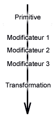
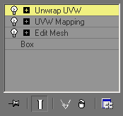
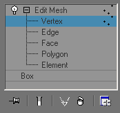

La pile des modificateurs
Les outils de CAO s'articulent autour de deux méthodes de représentation des objets : le CSG (Constructive Solid Geometry) et le B-rep (Boundary Representation). La première est une liste d'opérations séquentielles qui permettent d'aboutir à la forme géométrique exacte de l'objet que l'on modélise. La seconde, plus pratique, est une représentation par un nuage de points dans l'espace. Cependant le B-rep est une approximation de la forme théorique définie par le CSG. Les outils de CAO, soucieux de la précision, réalisent donc la conversion CSG -> B-rep au dernier moment. Par conséquent, ils traitent beaucoup de calculs mathématiques assez complexes.
Les logiciels d'imagerie tels 3DS Max ou gmax n'ont pas les mêmes contraintes de précision et, pour accélérer sensiblement les calculs, utilisent une méthode alternative. gmax construit les objets selon la méthode CSG en empilant des modificateurs qui construisent étape par étape l'objet définitif. Cependant, dès la toute première étape qui est la création d'une forme basique (la primitive), l'objet est sous forme de B-rep.
La pile de construction d'un objet
Un nouvel objet prend naissance par la création d'une primitive. Les primitives sont des formes basiques 2D ou 3D.
Chaque primitive dispose de paramètres qui définissent le nombre de segments utilisés pour la dessiner. Plus le nombre est élevé et plus la primitive ressemblera à sa forme mathématique idéale. Mais plus le nombre de facettes sera élevé. Ce qui est à éviter en 3D temps réel. Il faut donc trouver le meilleur compromis entre réalisme et nombre de polygones léger.
La primitive est ensuite utilisée en entrée d'un premier modificateur. Celui-ci peut avoir un effet sur la position des points de l'objet ou d'autres propriétés comme le matériau attribué à l'objet, les coordonnées de projection des textures...
Le résultat en sortie du premier modificateur sera utilisé, à son tour, en entrée du second modificateur et ainsi de suite.
Les opérations de translation, rotation et homothétie des objets ne sont pas des modificateurs mais des transformations. Elles sont toutes combinées en une unique opération de changement de repère qui sera appliquée après le dernier modificateur.
Si l'on souhaite effectuer une telle opération et qu'elle s'insère dans les modificateurs, une méthode simple est de travailler sur les sous-objets.
Exemple de Modificateurs
Voici un exemple de pile de modificateurs.
La primitive est ici un parallélépipède (Box) qui a subi 3 modifications. Un Edit Mesh pour commencer. Ce modificateur permet de travailler sur les sous-objets. Puis un UVW Mapping, qui crée des coordonnées de mapping pour l'application des textures. Enfin, un Unwrap UVW qui permet d'ajuster finement les coordonnées de mapping.
Ces trois modificateurs sont sans doute les plus utiles pour modéliser un objet pour Train Simulator.
Il est possible effacer un modificateur (icône de poubelle) ou de faire des Undo. Cependant, une longue pile de modificateurs a un coût en terme de performances et d'occupation mémoire. Une fois qu'un objet a la forme voulue, on peut écraser la pile.
En cliquant droit sur la pile, un menu contextuel s'ouvre. Cliquer sur Collapse All. L'objet devient une Editable Mesh. L'historique a disparu et l'objet est beaucoup plus léger en mémoire. gmax est plus stable quand on réalise régulièrement ce genre de ménage.
Objets et sous-objets
 Beaucoup de modificateurs proposent de travailler sur des sous-objets. Edit Mesh est le plus intéressant puisqu'il permet de travailler sur les sous-objets topologiques : les vertices, les segments (edge), les triangles (face), les ensembles de triangles (polygon) ou bien des éléments qui composent l'objet.
Si l'on se met en mode Vertex, on sélectionne l'ensemble des points puis on utilise une transformation (translation, rotation ou homothétie), cette transformation sera incluse dans le modificateur Edit Mesh et sera exécutée avant le modificateur suivant.
Pour le travail en 2D sur les splines, il existe le modificateur Edit spline équivalent.